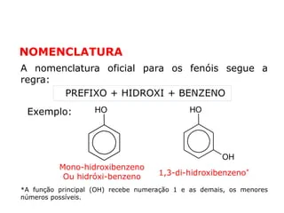

Função do Fenol O fenol é um composto orgânico que desempenha diversas funções importantes. Ele atua como um agente antimicrobiano, sendo eficaz contra bactérias e fungos. Além disso, o fenol possui propriedades antioxidantes, o que o torna útil na prevenção da oxidação de outros compostos. Por suas características desinfetantes, é frequentemente utilizado em produtos de limpeza e antissépticos.
Grupo Funcional do Fenol O fenol possui um grupo funcional característico, que é o grupo hidroxila (-OH). Esse grupo está ligado a um anel benzênico, o que confere ao fenol suas propriedades únicas. A presença do grupo hidroxila torna o fenol um composto ácido, embora sua acidez seja inferior à dos ácidos carboxílicos. Essa estrutura é responsável por muitas de suas reações químicas.
Nomenclatura do Fenol A nomenclatura do fenol é bastante direta. O nome "fenol" é derivado da combinação de "feno", que se refere ao anel aromático, e "ol", que indica a presença do grupo hidroxila. De acordo com as regras da IUPAC, ele pode ser nomeado como hidroxibenzeno, enfatizando a presença do grupo funcional hidroxila no anel benzênico.
O fenol tem uma ampla gama de aplicações em diferentes setores:
Indústria Química: O fenol é um precursor essencial na produção de diversos produtos químicos, incluindo plásticos, resinas, e detergentes. Ele é utilizado para fabricar resinas fenólicas, que são amplamente empregadas em adesivos e materiais de construção.
Farmacêutica: Devido às suas propriedades antimicrobianas, o fenol é utilizado na formulação de desinfetantes e antissépticos. Também é encontrado em certos medicamentos para tratar condições como dor e inflamação.
Cosméticos: Em produtos de beleza, o fenol é usado como conservante e agente antimicrobiano, ajudando a aumentar a vida útil dos cosméticos.
Obtenção do Fenol
O fenol pode ser obtido por diversos métodos, incluindo:
Oxidação do Ciclo-Hexanol: Neste processo, o ciclo-hexanol é oxidado para produzir fenol. A reação é realizada geralmente na presença de catalisadores.
Desidratação do Ácido Benzoico: O ácido benzoico pode ser aquecido para desidratar e gerar fenol.
Processo de Cumeno: Este é o método mais comum para a produção industrial de fenol. Consiste na reação do benzeno com propileno para formar cumeno, que é posteriormente oxidado e hidrolisado para obter fenol e acetona.